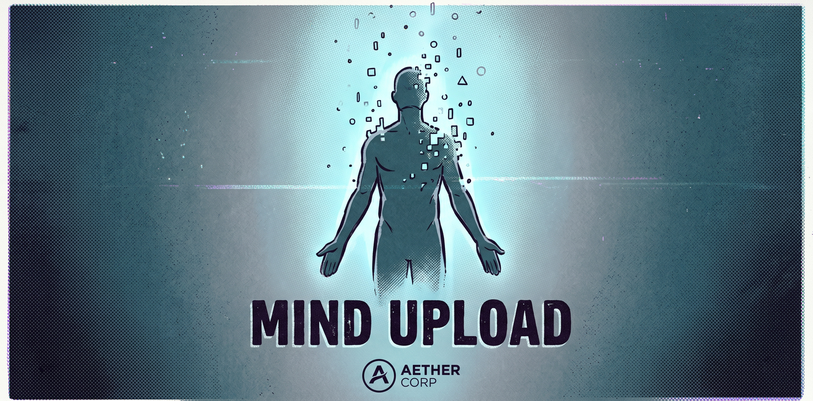
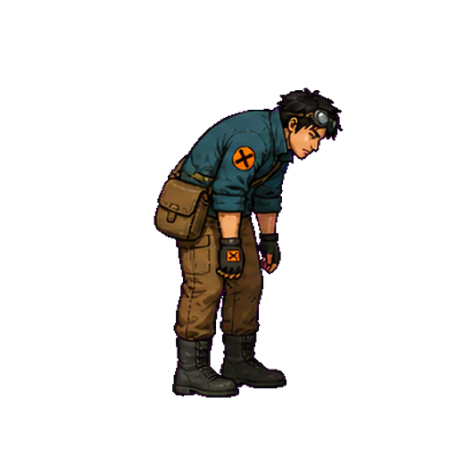
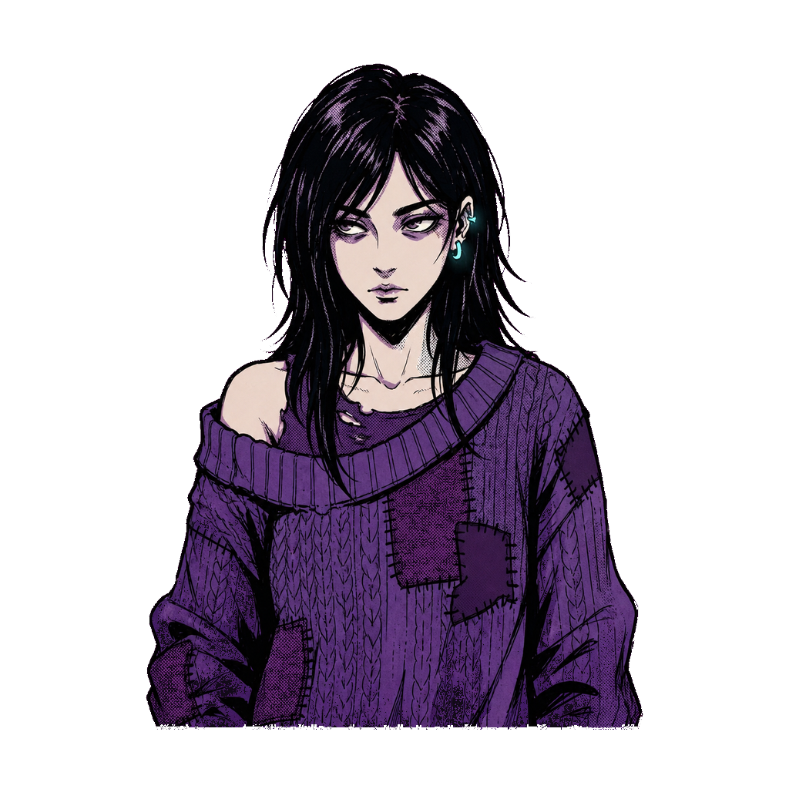
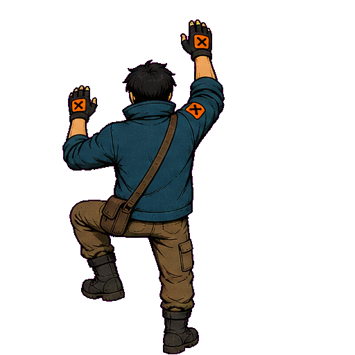
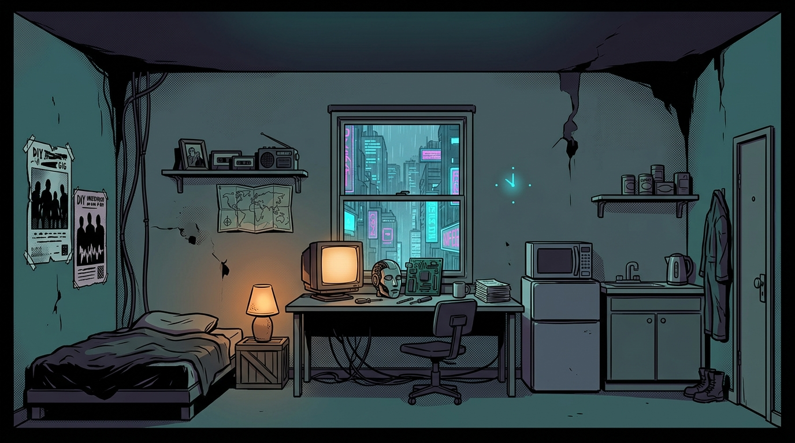
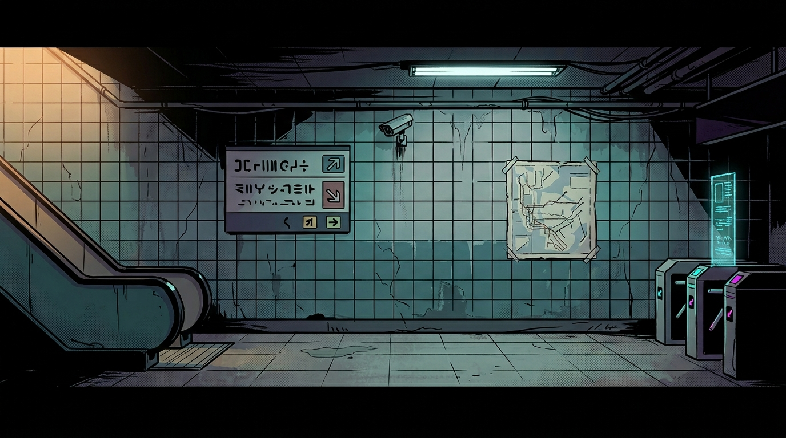
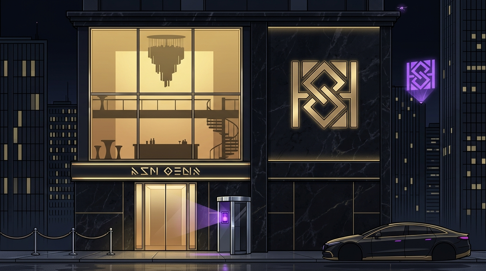
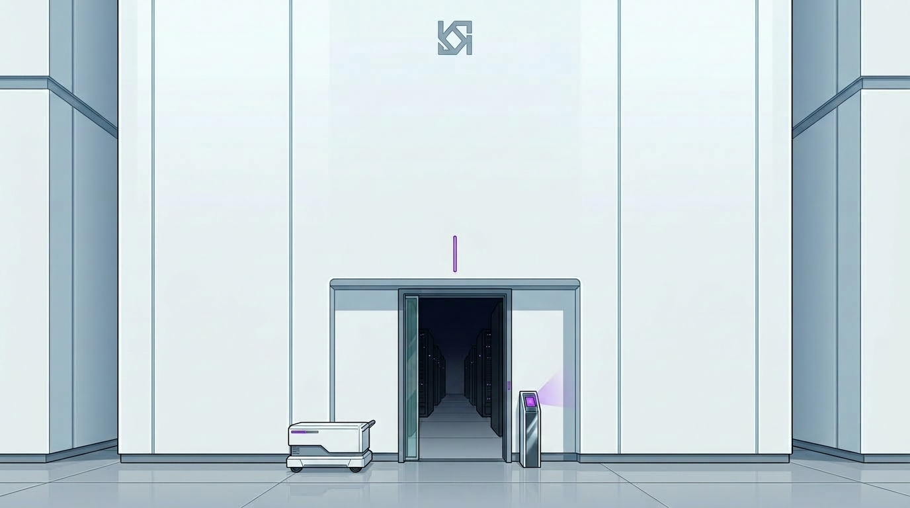

一個替 AI 收屍的人，在收屍時不斷撿到「被刪掉的人」的碎片——最後發現，當初選擇被刪掉的人，是他自己。
當記得會害死仍活著的人時，你還有沒有權利要求一個完整的自己。
v2.3 拍板整合稿 · 併入 Gemini 四點 · 目前最新主線事實來源系統不是一張臉，但它要有具體的官僚機制，玩家才會信。
近未來，身份是行政性的。當 AI 把一筆註冊判定為冗餘，這個人不會被殺，而是被行政性抹除：

最狠的一環——主角的正職就是這套機器的手。善後員＝把殘渣抹掉、把還記得的機器 reset 的清潔工。系統開頭刪，善後員收尾刪。拾遺者，是一個良心未泯的抹除者。而保存痕跡也可能替系統留下追蹤線——這是 Trace 的世界觀根據。
《雨還沒停》= 環境母題，不升格
城市記憶殘響（地鐵卡帶、街友哼唱），承擔 Riso / Zine 舊物情緒。不綁林霏或主角身世。
主線主題歌 = 全新女聲歌（林霏的聲音）
主角的記憶鑰匙與主線核心情感載體。歌名 / 編曲 / VO 後議。

他曾是受信任的善後員。某次被派去清一個「被服務性刪除」的人——夜總會賣「真人對話」的服務者林霏，記得太多客戶的事，被付錢標成冗餘。
他清不下去。 他留了林霏的殘響——第一件收藏是他沒能救的人。「留下不該留的東西」讓他也變成冗餘，下一張派工單是抹掉他。
他先知道了，沒有逃。自我刪除＝逃 + 保護：他看過那群黑戶的藏身方式，只要被抓回系統，他的記憶就變追蹤線。
| 段 | 落點 | 內容 |
|---|---|---|
| ① | Act 1 後段 / 2A | 店控機器人誤認：「善後員編號確認中……歡迎回來。」當下只像故障。 |
| ② | Act 2C | 阿達殘響：「他穿雨衣。手上拿著維修棍。他說只是照流程。」開始懷疑、還能逃避。 |
| ③ | 鎖 Act 2C | 舊善後工單：執行人＝失憶前的你。正式確認兇手是主角。不放 Act 4，避免與自我反轉互鈍化。 |
| ④ | 後期（僅一次） | 阿達本人短暫登場、不跟隨、不復仇：「你忘了啊？也好。至少有人可以忘。」 |
林霏（Lin Fei）——夜總會真人對話者，行動者，非聖女。
她做假身份、賣聲紋、包裝情緒資料——跑的是「偷來的富人數據 → 黑戶假身份」的洗白生意，最初也是為了錢、為了活。她只是比聚落裡的人晚一點壞掉。但她也自願被刪、替別人遮蔽：那批偽裝資料的源頭是她，事情敗露後她把自己連根刪掉，讓線斷在她身上。殘響不是「請記得我」，而是命令——
「你要是還在找我是誰，代表你還沒搞懂。重點不是我。重點是別讓他們被找到。」
名字的不對稱：林霏被人記得（有名），主角的名字被系統刷白（無名，只在備份前露出一次又放棄）。她被記得、他消失——強化 Protect 結局。

v2.3 核心：把「林霏」「七號妹妹」「回執」綁成一條因果鏈，去掉巧合感。七號要賣的網，有一部分正是他自己當年流血偷來、親手幫忙建起的。
七號知道交易做了，卻不知道成沒成、妹妹在哪、是否還活著。這份焦慮，就是他 Act 3→4 鋌而走險的核心背叛動機。
本質（v2.3 升級）：這正是林霏當年交易成功、卻未能交給七號的實體證據——所以它才會以一張「沒人認領的物流單」之姿，漂在 Act 2B 的失物物流箱裡。
表面：配送紀錄、模糊化收件代碼、最近配送「成功」、沒有完整姓名。可當雜物賣給晚。
真正用途：七號能認出代碼、舊暱稱、手寫符號。它證明妹妹仍在系統內、近期仍在收補給。不保證她幸福，只證明她還在、暫時安全。
「這種回執沒什麼價。除非你知道上面的代碼是誰的。」
仍賣掉 → Trust / Trace 皆降，鎖死和平線。
Trust ↑ · Trace 不升或微降
與「替鹿還母親殘響」並列為「還」的兩個特例。
不是變善良，是把醜陋搬進「系統壓力下普通人會做的事」：一個愛妹妹的哥哥，準備把一個小孩（小岑）和伍姐的身份賣回系統。四守則：①背叛具體不准美化 ②同情不買後果 ③三張臉各守本職 ④（可選）留一撮無救贖的灰。妹妹揭露守住「不保證幸福、只證明還在」的冷度。
賣／留／還 背後是兩條獨立隱性狀態：Trust＝對人、Trace＝對系統。
| 選擇 | Trust | Trace | 染色傾向 |
|---|---|---|---|
| 賣 | ↓ | ↓（原始資料離手） | Edited Expose（諷刺） |
| 留 | 矛盾 / 偏↓ | ↑（保存即留線） | Reclaim |
| 還 | ↑ | 未清洗仍可能↑ | Protect |
清洗：刪定位 / 模糊聲紋 / 移除系統標記。清洗後再還 → Trust↑、Trace 較低。代價：你永遠無法知道自己刪掉了多少細節。清洗在 Expose 結局直接兌現（§8）。
落地順序（已拍板）：第一版「Trace 單軸 + 清洗」先行；Trust 暫用既有 affinity 近似，等需要社群層級信任的細膩度再獨立。

已建的攀爬動作（防火梯）

七號提「我有一個名字還掛在上面」（不明說妹妹）。
隧道清潔機（格式化重置）；戰後撿到回執（此時只是雜物）。
阿達殘響 + 舊工單，確認兇手是你。不與七號線重疊。
賣回執給晚，或帶回執找七號（觸發稀有恩典和平線）。

七號要把藏身網一部分賣回系統換確認妹妹的資格。Trace 連動：留太多 → 他更容易拼出網；還得夠 → 伍姐或小岑提前警告。玩法＝對話 / 威嚇 / 交易 + 追逐 / 翻越。

共用觸發點：Act 4 備份區，你站在自己的備份前。硬鎖規則：Reclaim / Protect 只染色不硬鎖；Expose 例外——用 Trace + 清洗 硬分 A / B / C。
演出把關：C 要收向「你以為在選，系統毫不在意」的虛無，不是「玩家被懲罰」。
三條共用收尾：雨、那首被清掉的老歌《雨還沒停》、灰色裡的一點橙。
「雨還沒停，街上的燈已經熄了。」 差別只在：這一刻，是誰在記得、誰被保住、誰被你連累。
| 既有系統 | 主線怎麼用（v2.3） |
|---|---|
| 殘響 | 每幕一條殘響＝一個被刪的人；林霏殘響＝主角記憶鑰匙、且即那首女聲主題歌的載體 |
| QuestManager | 七號事件＝帶三分支結果的 quest，回執＝關鍵物件（林霏未送出的遺物） |
| 賣／留／還 → Trust / Trace + 清洗 | 給回執＝一次「還」；清洗在 Expose 結局硬兌現。Trace 單軸先行 |
| 歌曲 | 《雨還沒停》＝環境母題；新女聲歌＝林霏的聲音 / 主角記憶鑰匙 |
| 戰鬥 / 跳躍（新） | 機器＝格式化重置（先做 Act 2B 原型）；人類不格式化；跳躍＝繞後 + 探索 / 追逐 |
建議 build order：脊椎 Act 1 → 2 → 4 → 結局；Act 3 至少保留 15–20min 夜總會核心片段；戰鬥先做 Act 2B；Trust/Trace 先做 Trace 單軸 + 清洗。
新增 scope：①Expose A/B/C 綁定地下廣播站，這條結局需要它成為正式場景；②新女聲主題歌＝新音樂資產。規模勢必擴大（Phase 11+）。
總清機 P-00——主角的機械鏡像。遭遇＝選擇怎麼處理它：Reset / 留著（Trace 大升）/ 還 · 公開（可能暴露活人）。適合後期支線 / 隱藏區（候選：廢屋檔案室）。